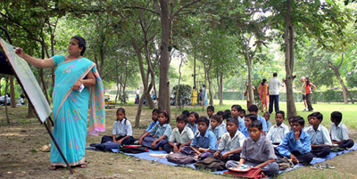

A ray of hope for lesser privileged children
The initiative that started with 30 children and 2 volunteers in July 2006 has now grown to more than 300 children, 10 teachers and 7 core volunteers. Children are in the age group of 3 to 16. Teaching and learning happens at the Main Park, opposite Sector 15A, Noida and a temporary shed built at the community. Considering the multi-age and multi-grade children the program earlier was divided into 4 stages:
Basis age and the skills acquired, competent children were categorized into different classes and special tutorials were conducted at the Park School as specified below:
Students who showed improvement in the non-formal educational curricula have been sent to government schools nearby. Today, we can proudly say that around 190 children have been admitted to the government schools after going through the basic learning process once they join our organisation.
-------------------------------------------------------
Basically, it’s a School after School to address the loopholes in the education system in government-run schools, ensure 100% continued attendance in the school and provide a back-up that is lacking at home as parents are illiterate. It is a tutorial for the children to serve as a supplement and emphasize on a certain subject area to further improve their learning capabilities. It is conducted for 2 hours everyday in the evening at the main park. Non-school going children attend Basti School in the morning followed by 2-hour tutorials in the evening. School-going children attend only tutorials in the evening to hone the skills acquired at the government school further. Every Sunday morning we assemble at the Park School for 2 hours including pre-school children from the basti. A wholesome snack is provided to the children along with co-curricular activities and provides an opportunity to interact with the guests/donors.
